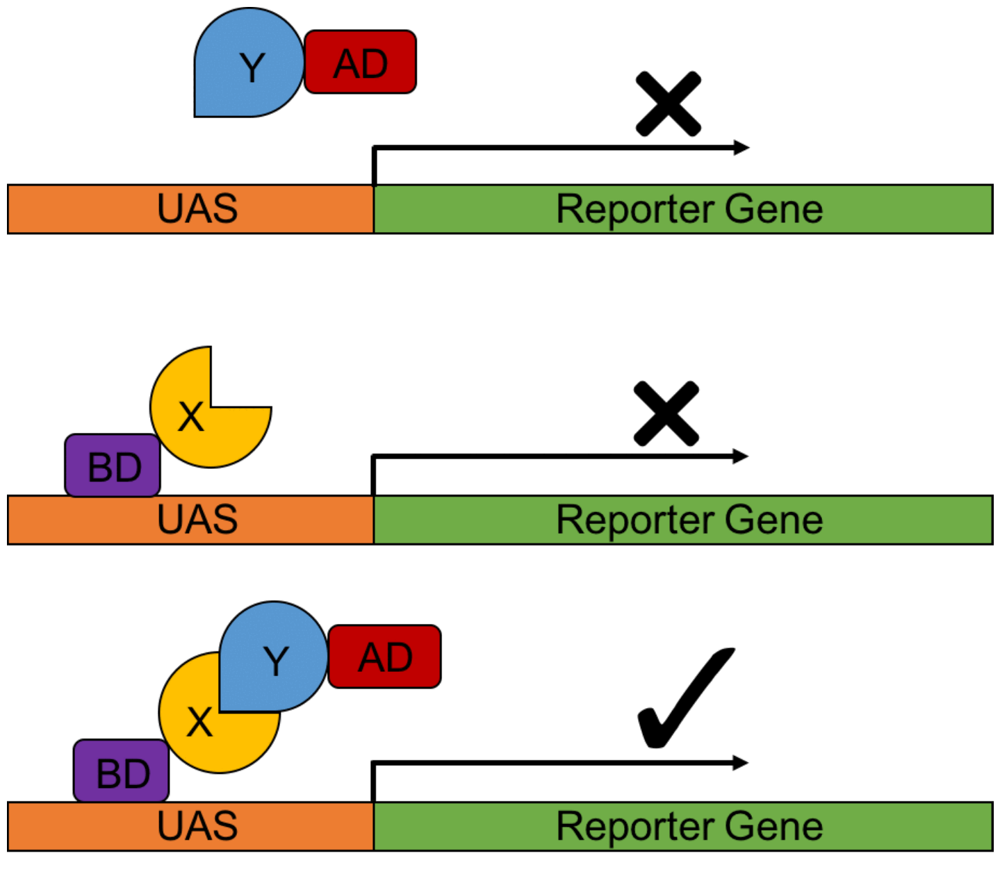

Questions to Ponder
Questions to Ponder
I have done SELEX on an N40 RNA library one time for binders to my protein of interest. I used a HiSeq to sequence it, but see no evidence of enriched sequences. Why not?
Why do we use next gen sequencing instead of cycle sequencing in these multiplex methods? What are the differences in utility between the different sequencing methods?
How can multiplex characterization be utilized to examine the influence of variations in promoter, ribosome binding site (RBS), spacer, and terminator elements on gene expression in E. coli?
How could you use multiplex characterization to obtain information about protein-protein interactions?
No, HiSeq and many of the other NGS sequencing methods give short reads – like 150 max. Since the library has only 32^3 =32768 members, we have plenty enough reads from a HiSeq or MiSeq to cover all members of the library. However, you only see the ends of the PCR product, so you will not be able to read an entire 900 bp sequence. There are some other NGS technologies such as Nanopore and Pacific Biosystems that do long reads with low per-base accuracy. That might be an option. But in general, you often have to use barcodes instead of looking at the gene sequence itself. You need to keep in mind the combinatorics math and the number of reads you get from the instrument. The HiSeq is as high-density as the data gets but it is still only 300 million, which is far less than the diversity of N40. So, you are just sampling the hit space. It has been through a round of selection, so the hits would be 10 to 100x enriched in the population, but supposing you started with 1E15 variants, you still have a hit frequency of at best 1 in 1E13. So, you probably aren’t even going to see the hits in a HiSeq read. You might be able to get some data out of cycle sequencing – you can submit a library instead of a pure plasmid, and you will get a chromatogram back. However, you only get one chromatogram/read back, and in general the goal of multiplex characterization is to get millions of reads back. Cycle sequencing is much more direct than NGS—you don’t have to sheer or specially prepare the DNA. It’s just a plasmid and an oligo, that’s all. So, there is less manipulation in between the experiment and the instrument to introduce error and bias. When you submit a library, you can calculate the relative abundance of each base at mixed positions from the overlapping signals. But in general it would be more accurate to pick individual clonal colonies and sequence those instead. To study the effects of genetic variation on gene expression in E. coli, a library of synthetic gene variants can be generated, each containing different combinations of promoter, ribosome binding site (RBS), spacer, and terminator elements. To enrich for variants that have higher levels of gene expression, a selectable marker such as an antibiotic resistance gene can be included in the library. The library can be cloned into a plasmid containing the selectable marker, and the surviving cells can be grown in the presence of the antibiotic.To barcode the library of variants for multiplex characterization, DNA barcodes can be incorporated into each variant during library preparation. Short-read sequencing can be used to identify and quantify each variant in the library. By analyzing the sequencing data, it is possible to identify which combinations of regulatory elements result in the highest levels of gene expression, and to engineer synthetic gene circuits with specific expression levels and dynamics. You could also use nanopore sequencing to identify which elements were included (assuming they are pretty different in sequence and not just point mutant variants). You could also watch mRNA levels more directly by barcoding and RNA-seq. One approach to studying protein-protein interactions is to use a yeast two-hybrid assay, in which one protein is fused to a DNA-binding domain and another protein is fused to an activation domain. If the two proteins interact, they bring the two domains together and activate a reporter gene. By using a library of fusion proteins and multiplex sequencing to identify which fusion proteins interact with each other, it is possible to obtain a comprehensive map of protein-protein interactions within the library. I have a 300 amino acid protein with 3 sites saturated by NNK mutagenesis distributed about the length of the gene. Can I decode this library using HiSeq NGS sequencing?.